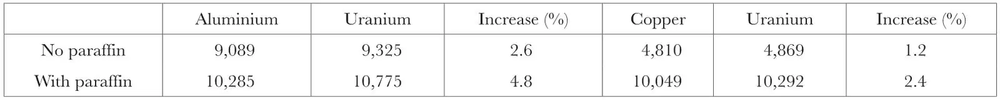

中文
中文J. Rotblat
Editor’s Note
The Polish physicist Joseph Rotblat here supplies further evidence on the release of neutrons in the fissioning of uranium nuclei, indirect evidence for which had already been reported. Using a new technique, he suggests that the number of secondary neutrons produced in a fission event might be as high as six. Rotblat went on to work on the Manhattan Project which led to the atomic bomb, but after the war became a fierce critic of nuclear weapons and worked tirelessly on international arms control. In 1957, with the philosopher Bertrand Russell, Rotblat founded the highly influential Pugwash Conferences, which bring together scientists and public figures in an effort to reduce the proliferation of nuclear weapons. 中文
THE experiments of Halban, Joliot, and Kowarski described in Nature1 give an indirect proof of the neutron multiplication accompanying the fission of uranium nuclei after neutron capture. It can be deduced from these experiments that the additional neutrons are, on the average, faster than the photo-neutrons from radium C-beryllium used as active primary radiation. This conclusion is confirmed in a subsequent note2 by the same authors in which they find that the neutrons contributed by uranium are able to produce the endo-energetic reaction S(n, p)P. 中文
I have made some experiments on the same problem by a different method. Any increase of neutron effects observed when neutrons are allowed to pass through a given medium may be due: (a) to the inelastic scattering of neutrons, (b) to the reaction (n,2n) or, exceptionally (n,3n); (c) to an unknown cause, as in the case of uranium to the fission of its nuclei. In the experiments of Halban, Joliot and Kowarski, effects (a) and (b) are excluded owing to the integrating method adopted and to the low energy of the primary neutrons. But if these effects are present, it is possible to estimate their importance relatively to effect (c) by comparing uranium with substances in which only effect (a) or only (a) and (b) are possible. I have used aluminium and copper as comparison substances of the first and of the second type respectively. 中文
A radon plus beryllium source was placed in the cylindrical axial hole of a cylinder of aluminium, of 2.2 cm. diameter and 5 cm. height, or, alternatively, of a cylindrical double-walled vessel of identical dimensions filled with uranium oxide (U3O8) or copper oxide. The mass of aluminium was 40 gm., of uranium oxide 49 gm. and of copper oxide 42 gm., and the thickness of walls could be neglected. The number of absorbing or scattering uranium nuclei was therefore 9.2 times smaller than the corresponding number of aluminium nuclei and 3.3 times smaller than the number of copper nuclei. One would expect, therefore, that the effect (a) due to aluminium, and effects (a) and (b) due to copper would be at least of the same importance and probably larger than the same effects due to uranium. The number and quality of neutrons issuing from these substances were compared by measuring the activation of a silver foil surrounding the cylinders in two cases: first, when no appreciable scattering of neutrons took place outside the cylinders, and secondly, when the neutrons were scattered back by a cylindrical sheet of paraffin wax of 6 mm. thickness. The results are given below, the figures being the total numbers of counts of a Geiger-Müller counter in corresponding series. 中文

It can be inferred from these data that uranium gives off, in fact, more neutrons than aluminium or copper. The increase is larger relatively to aluminium than to copper, which must be attributed to the reaction (n,2n) occurring in this last element. In both cases, the increase is larger when the neutrons are slowed down by a small quantity of paraffin, which shows that the additional neutrons from uranium are, on the average, slower than the bulk of primary neutrons emitted by the source. As, from other evidence, they appear to be faster than the radium C-beryllium neutrons, we can estimate that their average energy must be of the order of 1 Mev. 中文
Owing to the small number of uranium nuclei acting as absorbers or scatterers, it seems very unlikely that the apparent excess of neutrons given off by these nuclei should be due to some trivial cause like the inelastic scattering or the reaction (n,2n). It probably represents the neutron shower’ accompanying the fission of an activated uranium nucleus. Assuming the cross-section for this process produced by the neutrons from radon plus beryllium equal to 5×10－25 cm.2, I calculate that the number of neutrons emitted in a single fission is equal to 6. 中文
(143, 852; 1939)
J. Rotblat: Miroslaw Kernbaum Radiological Laboratory of the Scientific Society of Warsaw, Warsaw, April 8.
References:
1. Nature, 143, 470 (1939).
2. C.R. 208, 995 (1939).